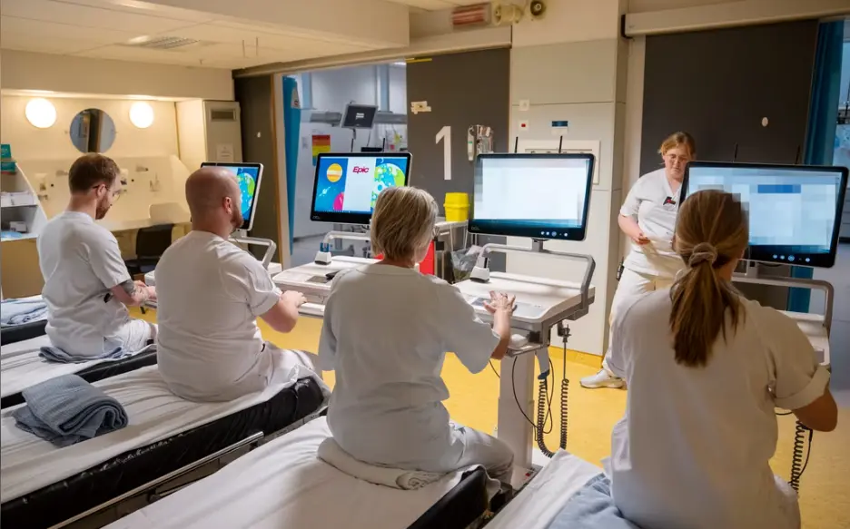

Ni av ti leger har mistet tillit til toppledelsen etter at et «livsfarlig datasystem» ble innført.
Legene frykter at pasientene skal få feil medisin, som følge av det nye systemet i Helse Midt-Norge.

Kortversjon
- Massiv misnøye: 92 % av legene i Møre og Romsdal har mistet tilliten til styret i Helse Midt-Norge på grunn av det nye IT-systemet Helseplattformen.
- Tidskrevende og ineffektivt: Systemet er uoversiktlig, tar lang tid å bruke, og opplæringen var mangelfull, med kursledere fra USA som ikke forsto norsk helsevesen.
- Pasientsikkerhet i fare: Leger melder om at medisiner forsvinner fra pasientjournaler, noe som skaper kritiske situasjoner. Til tross for kritikken, nekter Stortinget å stanse prosjektet.
Sammendraget er laget ved hjelp av kunstig intelligens (KI) og kvalitetssikret av våre journalister.
Legene i Møre og Romsdal er ekstremt misfornøyde med det nye IT-systemet Helseplattformen som er innført på sykehusene i fylket.
Det kommer frem i en ny rapport fra Høgskulen i Volda. Forfatterne legger den frem i dag. Rapporten er laget på oppdrag fra Legeforeningen i Møre og Romsdal.
Der står det frem at hele ni av ti leger – 92 prosent – har fått «svært svekket» tillit til styret i Helse Midt-Norge:
Det er på grunn av det nye IT-systemet i regionen, den såkalte Helseplattformen.
Legene jobber for det meste ved sykehusene i Ålesund, Molde, Kristiansund og Volda.
«Livsfarlig dataprogram»
Helseplattformen skulle gjøre hverdagen på sykehusene lettere. Pasienter og helsepersonell i Midt-Norge skulle bare ha ett felles journalsystem å forholde seg til. Prosjektet skulle koste under fire milliarder kroner, men koster i stedet nesten syv milliarder – så langt.
Det er et av de største IT-prosjektene i landet, men programvaren ble ikke testet, før den ble kjøpt inn.
Det hele er «sinnssykt dyrt og sinnssykt dårlig», skrev Aftenpostens kommentator Joacim Lund i oktober i fjor.
Siden har problemene tårnet seg opp. En av legene i Møre og Romsdal beskriver det nye systemet som «et livsfarlig dataprogram for pasientene».
I rapporten kommer det frem at flertallet av legene mener de bruker mer tid på jobben nå, enn før systemet ble innført:
– Fant på nytt fagspråk
Hele 86 prosent av legene svarer at de har fått svært svekket tillit til toppledelsen i helseforetaket på grunn av det nye datasystemet. 451 leger har svart forskerne. Omtrent 40 prosent av dem har vurdert å slutte i jobben. 13 prosent svarer at de leter etter en ny jobb.

Det største problemet er ifølge legene at jobben tar mye mer tid med det nye systemet. Det er uoversiktlig, og tar lang tid å bruke. Ansatte forteller om dårlig opplæring. Kursledere ble fløyet inn fra USA, uten at de forsto hvordan det norske helsevesenet fungerte.
Det gjelder også språket. En lege svarer at Helseplattformen «har oppfunnet norsk medisinsk språk på nytt». Ordene er oversatt fra engelsk, «etter en egen logikk», uten at produsentene «hørte med leger og sykepleiere hva som er norsk fagspråk».
Arbeidsmiljøet er også svekket, ifølge rapporten fra Høgskulen i Volda.
– Medisiner forsvinner
Legene er også svært misfornøyde med det de mener er et annet, stort problem med systemet: Det er vrient å vite hvilke medisiner pasientene har tatt. Det er ifølge legene fordi medisiner plutselig forsvinner fra pasientens journal, eller fordi det er noen medisiner ikke er å finne i systemet i det hele tatt.
«Det er umulig å seie når ein pasient slutta å bruke et legemiddel», svarer en lege. «Dette er særleg kritisk for pasientsikkerheita».
Aftenposten har tidligere forsøkt å få svar på hvem som er ansvarlig for skandalen. Da ble vi møtt med taushet.
Stortinget sa likevel nei til å stanse prosjektet i februar i år. I stedet bestemte et flertall av partiene at regjeringen må lage en uavhengig analyse av Helseplattformen, som skal stå ferdig senest til høsten i år.
7. mars skrev administrerende direktør i Helse Midt-Norge Jan Frisch et leserinnlegg i Aftenposten, der han omtalte kritikken mot Helseplattformen som «unyansert».
«Det er fortsatt utfordringer, men utviklingen viser at driften normaliseres over tid», skrev han.